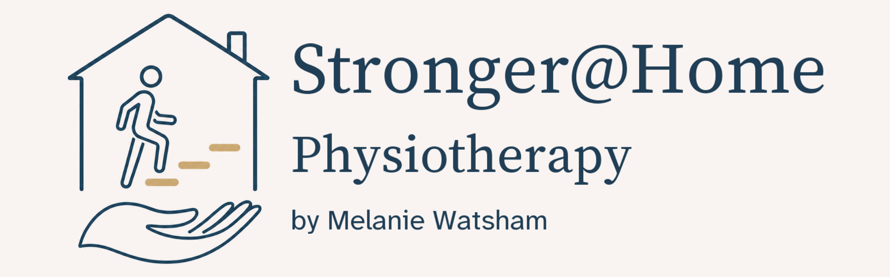
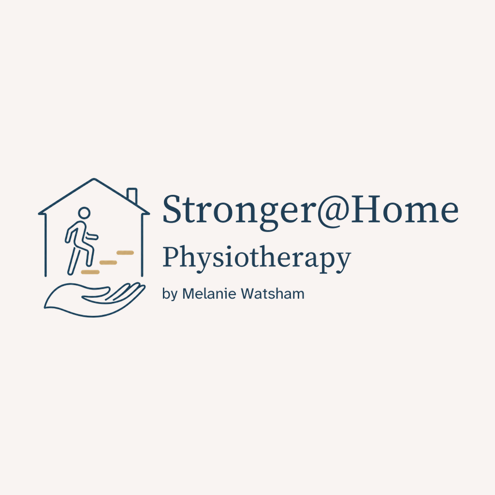

Approved by the project sponsor on 7 September 2026 for use throughout the project. The full wordmark is 75% of the symbol height, vertically centred, with a narrow gap.


Download square PNG · Download square JPG · Download wide PNG